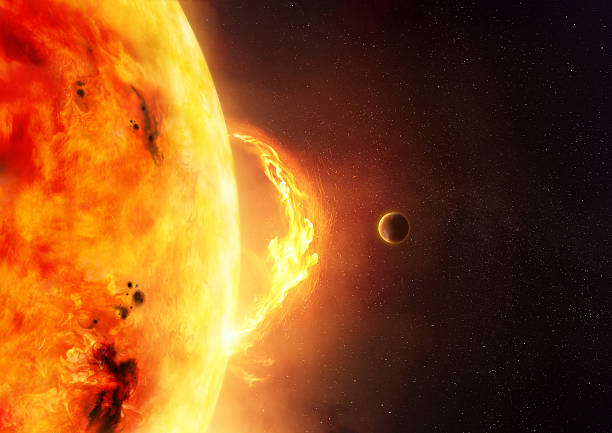

How astronomers probe the Sun’s explosive past
To learn about the Sun’s violent history — and to better understand the threat of powerful flares or coronal mass ejections — researchers deploy inventive techniques.


The Sun is an active star. Even at its most quiet, its surface trembles and shimmers as if it can barely hold in the contents of its hot belly. And when it finally releases that frightening power — launching a solar flare or a coronal mass ejection (CME) into interplanetary space — we can only hope the blast misses Earth. If it doesn’t miss, Earth bears the brunt of the Sun’s fury. This can cause our planet to experience strong geomagnetic storms, which may disrupt navigational systems, overload power grids, and knock out satellites in orbit. The economic costs of a powerful and well-aimed solar explosion could add up to billions of dollars per day. Preventing potential disaster brought upon us by our closest star will be difficult, to say the least. To stand a chance, we have to learn more about solar activity. However, the most powerful events are also very rare. To understand the extreme end of solar behavior, we need to observe the Sun on long timescales — and peer into its distant past.
Centuries of data The first evidence of solar activity that humans noticed was sunspots, with the earliest known records dating to 28 B.C. in ancient China. Detailed telescopic observations of sunspots go back to the 1600s and represent perhaps the longest-running series of direct observations of any natural phenomenon. Counting sunspots revealed that their numbers change periodically over time in an 11-year cycle — from virtually zero to tens or even hundreds of spots dotting the Sun’s face at once. The record of monthly number of sunspots since 1749 reveals how solar activity changes periodically over time in an 11-year cycle. The red area represents a moving average value. The record of monthly number of sunspots since 1749 reveals how solar activity changes periodically over time in an 11-year cycle. The red area represents a moving average value. McIntosh et al. 2020 Additional observations from the ground and, in the modern era, space-based observatories linked sunspots to magnetic fields. The flow of hot plasma within the Sun generates electric currents, which in turn generate magnetic fields. Solar rotation stretches and twists these fields around the Sun. Sunspots mark the regions where magnetic field lines penetrate the surface; the pressure they exert cools the gas, making them appear not as bright as their surroundings.
Sometimes the entangled magnetic field lines snap, releasing an enormous amount of energy. The emerging flare shoots particles and high-energy radiation into space. As the magnetic loops reconnect, they may leave the surface, carrying plasma with them into space as a CME. Scientists understand the basic physics of explosive solar phenomena. But the details remain elusive. “What makes it unstable, where does it happen, can we have a certain lead time to predict it?” are all questions researchers are trying to answer, says Astrid Veronig, a solar physicist at the University of Graz in Austria. To answer them, historical data can be just as important as fresh observations. Drilling down into solar history The first flare ever directly detected was also one of the strongest. The 1859 Carrington event wreaked havoc on telegraph networks and led to auroras which, in the northern hemisphere, were visible as far south as the Caribbean. A similarly strong event from 2012 fortunately missed Earth. But such events, while threatening, pale in comparison to superflares on other stars, whose energy outputs can be 10 to 10,000 times stronger. As far as flaring is concerned, the Sun has long been considered a relatively clement star. And then, in 2012, scientists discovered that the Sun produced a superflare in A.D. 775 — a revelation that showed the Sun is capable of much more than previously believed. The vestiges of such violent solar events lie hidden in the rings of ancient trees and deep under the layers of ice at Earth’s polar caps. When a stream of energetic particles, accelerated by a flare, barges into the Earth’s atmosphere, it sets off a chain of reactions. The collisions between the particles and air molecules create radioactive isotopes (elements with the same number of protons but a different number of neutrons) that eventually settle down all over the planet. The isotopes get absorbed into tree rings, where scientists can search for spikes in isotope concentrations. And because each tree ring corresponds to one year of growth, they can very precisely determine the year each spike occurred.
Source: Astronomy.com
Back to News